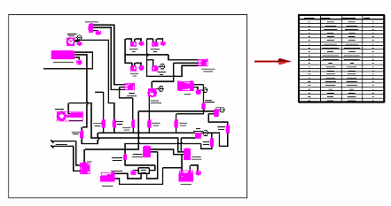

Using blocks
Creating new blocks
You can create new blocks in Solid Edge using the drawing tools to create the geometry and the Block command to define the graphics as a block. Use the Block command to define the new block, following the prompts to select its contents, assign an origin point, and assign a descriptive block name. When you select Accept, the block name is added to the Block Selection Pane for use in the active document. See Create a block.
To learn about the icons used to identify source blocks, block views, and nested blocks, see Displaying blocks in the Library pane.
To create one or more blocks from blocks in an existing Solid Edge document, you can simply click a file name in the Block Library to open it, and then drag individual blocks from it onto an ordered sketch, assembly layout, drawing sheet or 2D Model sheet. Use the Unblock command to unblock the geometry, and then use the Block command to create new blocks from the geometry. Also see Adding Alternative Block Views, below.
You also can create a block and simultaneously add it to the library by selecting and dragging 2D elements from the drawing sheet into the Block Library File List. This creates a block file with a default Symbol.dft file name, and it removes the geometry from the drawing sheet. Even though the block has a default symbol name, it is still a block. You can select the block in the library, and then use the Rename command on the file shortcut menu to rename the file. Alternatively, you can select the Edit command on its shortcut menu, and then use the Home tab→Clipboard group→Copy To Library command to both create and rename the block, without removing the geometry from the drawing sheet.
To learn about block libraries, see Organizing block libraries.
Placing blocks
Existing blocks can be dragged onto the document, copied and pasted between documents, or placed using the Place Block command available from a block's shortcut menu in the Block Selection Pane. All of these methods allow you to set the scale and change the rotation of the graphics before they are placed. For more information, see Place a block.
Individual blocks or block views can be dragged from the Block Selection Pane into the active document. Dragging a block into the active document is equivalent to placing a block using the Place Block command.
You can select and place a single block from an external block library file. If you set the Block Library File List to display thumbnails, you can see what is in the file. You can drag an entire block file of type .dft, .dwg, or .dxf into the document from the Block Library File List or from Windows Explorer.
-
If the file is type .dwg or .dxf, and if the file was created with one or more blocks defined, then the contents of the file are translated and placed as individual blocks in the active document. If there is one block in the file, then a single block is placed in the active document. The AutoCAD Import Translation Wizard settings control how the block is translated into Solid Edge. These are set in the Open File dialog box.
For more information, see Importing AutoCAD blocks.
-
If the file is type .dft, and if there is a single block occurrence in the file, then it is placed as a single block. If there are multiple blocks in the file, all of the graphics in the file are placed as a single block. In the latter case, you can use the Unblock command to drop the graphics to individual elements.
Note:When you drag a .dft file onto the sheet, only the contents of the active sheet of the file are copied and placed in the current draft document. If the .dft has more than one sheet, first open and save it with the sheet containing the block set as the active sheet.
Blocks are placed in the document according to the origin point initially defined for them when they are created. You can always move the block to a new location once it is placed.
Blocks and groups
Blocks can be organized into groups. Grouping makes it easy to select multiple entities at once, especially in a complex drawing. Individual blocks can be grouped together using the Group command.
You can select a group of elements to include in a block. Also, you can locate and select an individual item within a group for inclusion in the block using either QuickPick or the Bottom Up button on the Select command bar. The object is removed from the group when it is included in the block.
Nested blocks
A nested block is a block that is included in another block.
The benefit of creating a diagram using nested blocks is that nested blocks are easy to select and place. Also, you can easily replace all of the occurrences of a sub-block within the nested block using the Replace command.
To create nested blocks, create the sub-blocks first, and then drag a box around the sub-blocks to create another block that includes them all. For example, you can draw an arrow, create a block from it, and then include the arrow as a sub-block in other blocks.
Editing blocks
Blocks you have placed in the document can be renamed, opened for edit, edited in context, deleted, replaced, and unblocked. These commands are available on the shortcut menu of the selected source block or block view in the Library, and from the shortcut menu of a block occurrence on the sheet. Behavioral differences between the source and occurrences determine whether a command is available or not.
For more information, see Editing blocks.
Creating tables from blocks
You can generate an associative table from block diagrams and from other types of drawings that contain blocks using the Home tab → Tables group → Block Table command.

For more information, see Block tables.
How do I
Create a blockPlace a block
View and modify block scale
Set a default block view
Learn more
BlocksDisplaying blocks in the Library pane
Organizing block libraries
Importing AutoCAD blocks
Scaling and rotating block graphics
Adding alternate block views
Look up more details
Solid Edge block terminology(Create) Block command
Block command bar
Block Occurrence Selection command bar
Place Block command
Block Options dialog box
Add Block View command
Set As Default (Block) command
Quick links
Block labels and propertiesEditing blocks
Connectors